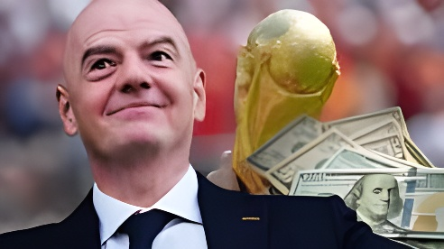

Fin juillet 2026, la révélation d'un projet visant à ouvrir la Coupe du monde à des investisseurs privés proches de la famille Kushner a déclenché une fronde sans précédent des confédérations continentales contre le président de la FIFA, Gianni Infantino. Abandonné en quatre jours, le projet laisse une UEFA qui affirme avoir perdu confiance dans son président, à sept mois d'une réélection désormais incertaine.
Le 28 juillet 2026, la presse britannique — The Times puis le Financial Times — révèle un projet confidentiel de la FIFA baptisé « FIFA Forward Enterprise » (FFE). Cette nouvelle structure commerciale, valorisée à 20 milliards de dollars, aurait regroupé l'essentiel des activités lucratives de l'instance : droits de diffusion, sponsoring et exploitation de tournois comme la Coupe du monde et la Coupe du monde des clubs. L'objectif affiché par Gianni Infantino, qui présente l'opération comme « une occasion en or » pour le développement du football, est de lever jusqu'à 4,2 milliards de dollars en cédant à des investisseurs une participation minoritaire de 20 %, sans droit de regard sur la gouvernance sportive.
La FIFA travaille sur ce montage avec la banque JPMorgan. Le fonds pressenti pour mener la levée de fonds est Thrive Eternal, un véhicule d'investissement à long terme créé par Joshua Kushner, fondateur de Thrive Capital et frère cadet de Jared Kushner, gendre et ancien conseiller de Donald Trump. Cette proximité, alors que leur père Charles Kushner occupe le poste d'ambassadeur des États-Unis en France, confère immédiatement au dossier une dimension politique explosive, quelques semaines seulement après un Mondial 2026 déjà marqué par la proximité affichée entre Infantino et le président américain.
La réaction est immédiate. Dès le 30 juillet, l'UEFA réunit en urgence ses fédérations membres et menace de boycotter toutes les compétitions de la FIFA si le projet n'est pas intégralement abandonné, avec des garanties fermes qu'une telle ouverture au capital privé ne se reproduira jamais. La Confédération asiatique de football (AFC) et la CONCACAF, l'instance nord et centraméricaine, apportent aussitôt leur soutien à la fronde, exprimant à l'unanimité leur opposition au projet.
« Ce n'est pas à la FIFA de le vendre. Aucun d'entre nous n'est propriétaire du football. »
— Communiqué de l'UEFA, 29 juillet 2026Face à l'ampleur de la contestation, Gianni Infantino recule dès le 31 juillet, soit quatre jours seulement après la révélation du projet. Dans un communiqué, la FIFA reconnaît que le projet « a créé des divisions » qui ne servaient plus l'objectif initial et annonce son retrait. Mais le recul ne suffit pas à éteindre la crise : le 1er août, l'UEFA affirme officiellement avoir perdu confiance dans la présidence d'Infantino, un signal clair de son intention de s'opposer à sa réélection prévue en mars 2027. Le président de l'UEFA, Aleksander Ceferin, avait d'ailleurs déjà boycotté la finale de la Coupe du monde 2026 quelques semaines plus tôt pour marquer son mécontentement, avant même l'affaire FFE.
Début août, l'UEFA maintient sa menace de boycott des compétitions FIFA, exigeant des garanties fermes plutôt qu'un simple abandon de circonstance. Il faut attendre le 27 août, à la veille du tirage au sort de la Ligue des champions à Monaco, pour que l'instance européenne accepte formellement de lever cette menace, après avoir reçu l'assurance que le projet ne serait pas relancé sous une autre forme. Ce dénouement libère notamment les fédérations européennes engagées dans la Coupe du monde U20 féminine, qui débute le 5 septembre en Pologne.
Au-delà du volet financier, la crise relance les critiques sur la gouvernance de la FIFA. Le 6 août, une coalition regroupant Amnesty International, Human Rights Watch et Reporters sans frontières dénonce un fonctionnement toujours aussi opaque, quinze ans après le scandale de corruption qui avait secoué l'institution en 2015. Ces organisations rappellent que les familles de travailleurs migrants morts sur les chantiers de la Coupe du monde 2022 au Qatar n'ont toujours pas été indemnisées, alors que l'édition 2034 se profile déjà en Arabie saoudite.
The Times puis le Financial Times révèlent le projet FIFA Forward Enterprise et l'implication de Thrive Eternal, le fonds de Joshua Kushner.
Réunion d'urgence de l'UEFA, qui menace de boycotter les compétitions FIFA ; l'AFC et la CONCACAF s'associent au mouvement.
Gianni Infantino annonce l'abandon du projet FFE, quatre jours après sa révélation.
L'UEFA déclare avoir perdu confiance dans la présidence d'Infantino, à sept mois de sa réélection.
L'UEFA maintient sa menace de boycott ; une coalition de défense des droits humains dénonce la crise de gouvernance de la FIFA.
L'UEFA lève formellement sa menace de boycott après avoir obtenu des garanties que le projet ne sera pas relancé.
Le retrait du projet FFE et la levée du boycott mettent fin à l'épisode le plus spectaculaire de la crise, mais pas à la crise elle-même. Le vrai enjeu se joue désormais en mars 2027 : Gianni Infantino, qui semblait promis à une réélection tranquille, doit composer avec une UEFA ouvertement hostile et des organisations de défense des droits humains qui rappellent que changer de dirigeant ne suffira pas si les structures de l'institution restent inchangées.
Le besoin de financement, lui, n'a pas disparu : entre l'extension des compétitions et les promesses faites aux fédérations, la FIFA devra tôt ou tard trouver de nouvelles ressources — sans pouvoir, cette fois, se tourner aussi facilement vers le capital privé. La question de qui possède réellement le football mondial, posée avec fracas cet été, n'a donc pas fini de diviser l'institution avant les échéances de 2030 et 2034.